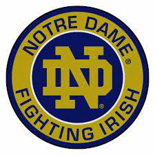
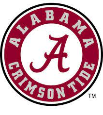

O time de Notre Dame Fighting Irish é o time de futebol Americano que representa a Universidade de Notre Dame em Notre Dame, Indiana, ao norte da cidade de South Bend. A equipe joga seus jogos em casa no estádio Notre Dame do campus, que tem capacidade para 77.622.
Notre Dame é uma das sete escolas que compete como independente no nível de Football Bowl Subdivision (FBS) da National Collegiate Athletic Association (NCAA); no entanto, eles jogam cinco jogos por ano contra adversários da Atlantic Coast Conference (ACC), da qual Notre Dame é membro em todos os outros esportes, exceto hóquei no gelo.
Alabama Crimson Tide

O Alabama Crimson Tide é uma equipe de futebol americano universitário que representa a Universidade do Alabama.
A equipe compete na Football Bowl Subdivision da National College Athletic Association e na divisão Oeste da Southeastern Conference.